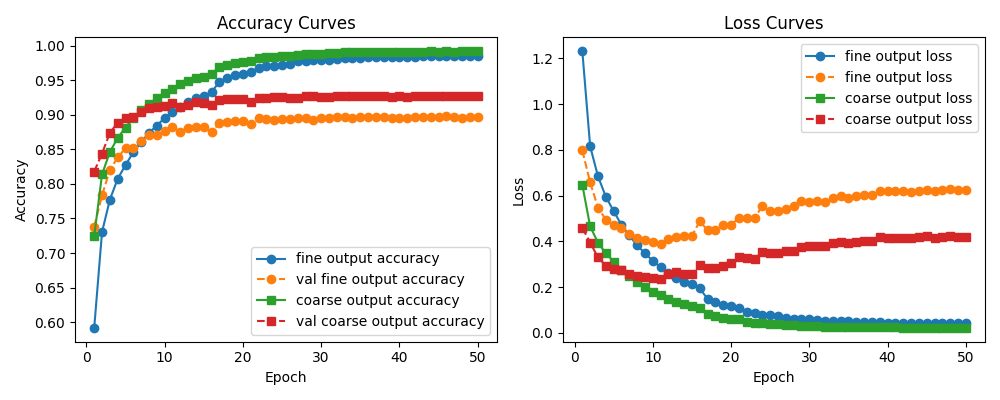
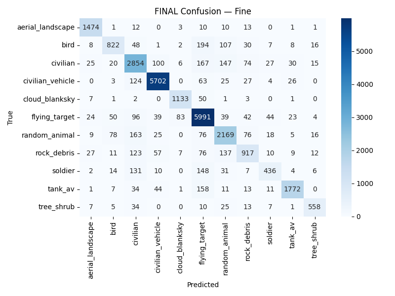

Overview
An end-to-end deep-learning pipeline for drone- and camera-based target identification. The system unifies heterogeneous public image datasets, trains a multi-output CNN that predicts both a fine-grained object class and a coarse valid/invalid label, and embeds the trained classifier behind a YOLO segmentation front-end for real-time video.
The work emphasizes practical concerns — dataset unification, label consistency, and computational efficiency — so the classifier can be dropped into a streaming application running on drone footage or fixed surveillance cameras.
Pipeline
Three modular stages, each independently upgradable.
-
Dataset builder — pulls images from multiple KaggleHub sources, reorganizes them into a
single
images/directory and a unifiedmetadata.csv, hash-dedupes, and aliases dataset-specific terms (e.g. pedestrian / walker) onto canonical labels. -
Multi-output CNN classifier — a regularized ConvNet with two heads: one over the 11
canonical fine classes, one over three coarse validity classes (
valid,invalid_nontarget,invalid_background). - Real-time utilization program — a YOLO segmentation front-end produces per-frame instance masks; each mask is cropped, normalized to match training, classified, and overlaid onto the source frame at the predicted coarse label's color.
Dataset
Source datasets use inconsistent directory layouts, label columns, and category names. The builder normalizes all of this into one corpus suitable for stratified training.
Each fine label (e.g. person_pedestrian, civilian_vehicle, tank_av) is
mapped onto one of three coarse buckets. Labels are derived per source via folder names, CSV columns, or
filename regex, then aliased onto a canonical taxonomy. The 70 / 15 / 15 train/val/test split is stratified on
both fine and coarse labels, with class-balanced sampling and per-label caps to prevent background and other
dominant categories from swamping training. Quality checks verify on-disk presence, skip corrupted files, and
ensure every split contains a minimum number of valid examples. Hash-based de-duplication catches the same
image appearing across multiple sources.
Model architecture
A compact multi-output ConvNet shared between two classification heads.
The backbone is a stack of Conv → BatchNorm → ReLU → MaxPool blocks with growing channel depth (32 → 64 → 128) and shrinking spatial resolution. Global average pooling collapses the final feature map into a fixed-length vector that feeds both heads:
- Fine head — dense layers ending in an 11-way softmax over the canonical fine classes.
- Coarse head — branches off the same backbone features, ending in a three-way softmax over the validity categories.
Both heads are optimized jointly with categorical cross-entropy and configurable per-head weights. Dropout and L2 weight regularization mitigate overfitting; Adam / AdamW with a plateau-triggered LR schedule, and optional mixed-precision training, round out the optimizer setup.
Training
Implemented in TensorFlow with tf.data pipelines built directly from metadata.csv.
Each row loads its image via out_relpath, decodes to RGB, resizes to a fixed input resolution,
and normalizes pixel values. Augmentations (horizontal flip, mild rotation, brightness/contrast jitter) are
applied conservatively so small targets and label semantics survive.
Sample weights down-weight over-represented classes (notably invalid_background) and up-weight
under-represented valid categories. An optional flag controls whether invalid examples contribute to the
fine-head loss — when disabled, invalids train only the coarse head, freeing the fine head to focus on
examples with meaningful fine labels. Two recipes were used: end-to-end joint training from scratch, and a
two-stage warm-up where the coarse head trains alone before the fine head joins.

Results
Held-out test set: 27,362 samples across 11 fine classes. Naïve single-class baselines reach 23.5% (fine) and 34.5% (coarse), so both heads must learn real structure to be useful.
- 87.1% Fine accuracy 11-class softmax — vs. 23.5% baseline
- 91.3% Coarse accuracy 3-way valid/invalid — vs. 34.5% baseline
- 0.836 Fine macro F1 Precision 0.857 / Recall 0.821
- 0.913 Coarse weighted F1 Precision 0.913 / Recall 0.913
Fine confusion matrix
Test set confusion matrix for the 11-class fine head. Strong diagonal dominance — most off-diagonal mass clusters on visually similar pairs (soldier / civilian, random_animal / bird, rock_debris / invalid_background).

Per-class precision
The fine head is strongest on visually distinct categories (vehicles, landscape) and weakest where classes share appearance (soldier / civilian, random animal / bird, rock debris / background).
| Class | Precision |
|---|---|
| civilian_vehicle | 0.9538 |
| tank_av | 0.9426 |
| aerial_landscape | 0.9306 |
| cloud_blanksky | 0.9174 |
| tree_shrub | 0.8885 |
| flying_target | 0.8629 |
| bird | 0.8123 |
| random_animal | 0.8027 |
| civilian | 0.7882 |
| soldier | 0.7730 |
| rock_debris | 0.7547 |
| Class | Precision |
|---|---|
| invalid_nontarget | 0.9277 |
| valid | 0.9165 |
| invalid_background | 0.8941 |
Error analysis
Confusion matrices and qualitative review highlight three recurring failure modes.
- Borderline crops — segmentation masks that mix target and background pixels. When background dominates the crop, the classifier defaults to an invalid label even when part of a target is visible.
- Small or occluded targets — distant or partially blocked objects provide too few pixels for confident fine-class prediction.
- Visually similar classes — soldier vs. civilian, bird vs. random_animal, and invalid_nontarget vs. invalid_background account for most off-diagonal confusion-matrix mass.
Input resolution trade-off
Bumping inputs from 64×64 to 128×128 significantly improved both fine and coarse accuracy; 256×256 added very little. For offline classification, 128×128 is the sweet spot. For the live video pipeline, lower-resolution crops actually helped — they kept the YOLO + CNN loop closer to real time and improved detection of small, distant targets thanks to the larger effective receptive field.
Real-time utilization
The deployment program runs against video files (with webcam and live drone feed as future targets). YOLO produces per-frame instance masks; each mask is cropped from the source frame, resized to the CNN's input size, and normalized identically to training. Only the coarse head is consulted in the live overlay — the operational question is "valid target?", and the three-way decision is fast and easy to render:
- valid — green overlay, optionally annotated with the fine-class label.
- invalid_nontarget — red overlay, signalling a real object that is not the target.
- invalid_background — suppressed entirely.
Optional frame skipping keeps throughput up. Decoupling detection from classification means a newer YOLO model can drop in without touching the CNN, and adding new fine classes only requires retraining the classifier.
Limitations & future work
- Data coverage — performance is bounded by the diversity of the unified training set. Drone altitude, camera angle, lighting, and environmental context all affect generalization.
- Small targets — objects that occupy only a handful of pixels remain the hardest case.
- No temporal smoothing — the live overlay treats each frame independently, so detections on borderline crops can flicker between coarse labels across consecutive frames.
- Next directions — temporal modelling across consecutive frames, backbones pretrained on aerial imagery, active-learning loops fed by uncertain detections, and lightweight backbones (MobileNet-class) for constrained hardware.
Links
Dataset, full writeup, and source.